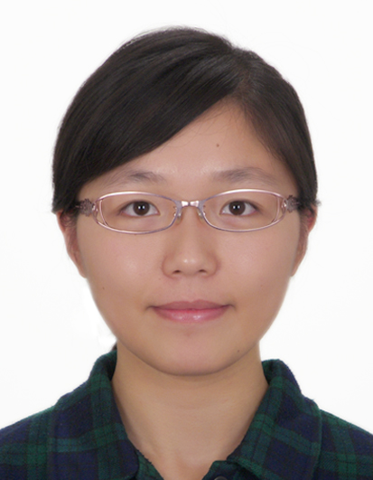

GLORE
Web-based Grid binary LOgistic REgression (WebGLORE)
Team members
|
Xiaoqian Jiang, PhD Division of Biomedical Informatics University of California, San Diego |
Wenchao Jiang Visiting graduate student Shanghai Jiaotong University |
||
|
Pinghao Li Visiting graduate student Shanghai Jiaotong University |
Shuang Wang, PhD Division of Biomedical Informatics University of California, San Diego |
||
|
Asher Garland Department of Computer Science and Engineering University of California, San Diego |
Karapet Shaginyan, MS Department of Computer Science University of California, Los Angeles |
||
|
Yuan Wu, PhD Department of Biostatistics & Bioinformatics Duke University |
 |
Meng Xue Visiting student Shanghai Jiaotong University |
|
|
Chialun Lu Department of Computer Science and Engineering University of California, San Diego |
Lucila Ohno-Machado, MD, PhD Division of Biomedical Informatics University of California, San Diego |
WebGLORE team (cc. Xiaoqian Jiang)
Division of Biomedical Informatics, University of California, San Diego
9500 Gilman Drive, #0505, La Jolla, CA 92093
(Email) x1jiang@ucsd.edu